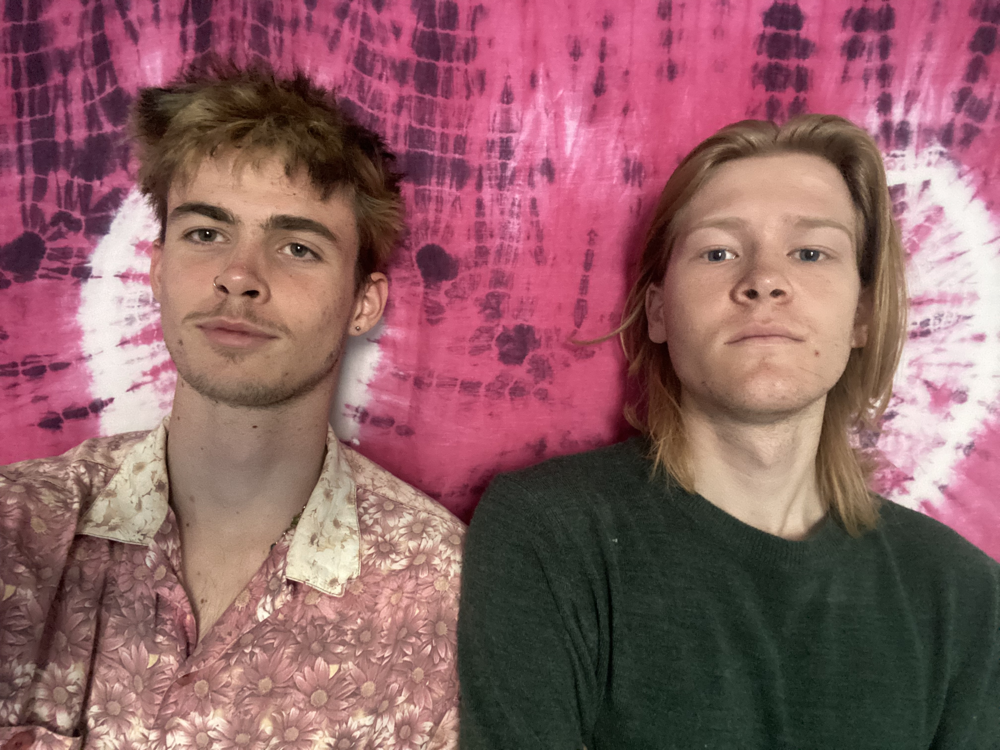

We are Sans Operator, a team of two scientists studying at Imperial College London with a passion for digital art and creating immersive experiences.
Our journey began at the start of 2024, supported by our university through the Hackstarter competition program. It was here that we produced our first artwork, 'The Swarm.'
This project marked our initial foray into prototyping art through code. We started with iterations in Python before transitioning to TouchDesigner to leverage its advanced capabilities.
Among many STEM-focused projects, our creation won the People's Choice Award, which motivated us to push the boundaries of digital art even further.
Our aim is to blend our understanding of technology with art to immerse audiences in spectacular experiences, breaking down stigmas associated with technology and fostering a deeper appreciation for the innovations around us.

Jacob Beeson
Project Manager and Designer,
Bioengineering Student at Imperial College London
Gabe Salt
Prototyper and Coder,
Computer Science Student at Imperial College London